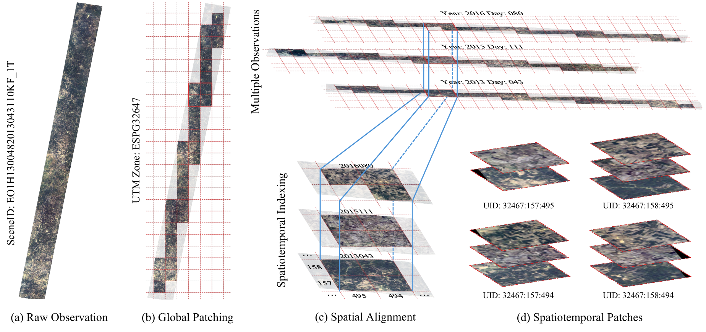
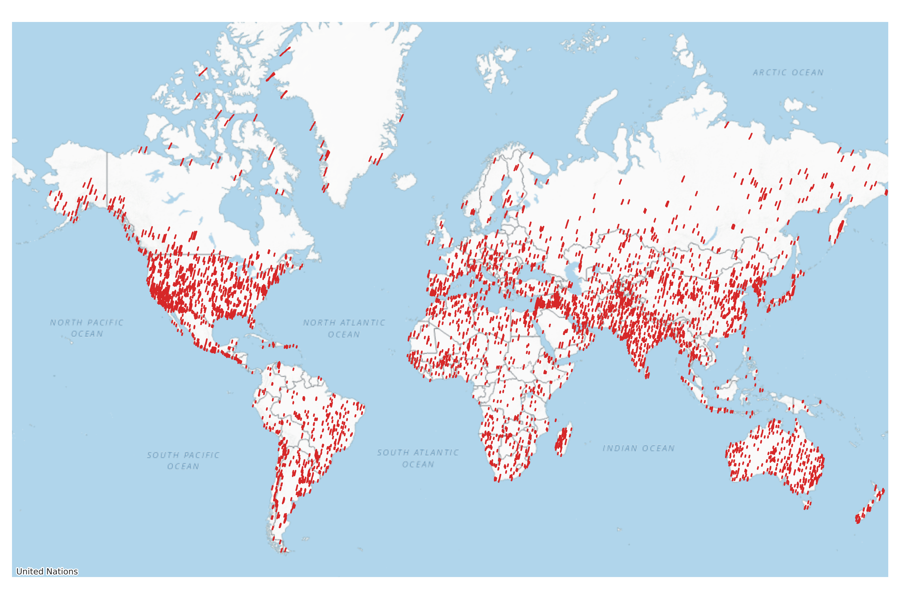
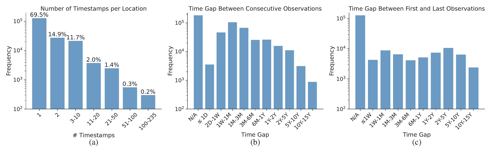
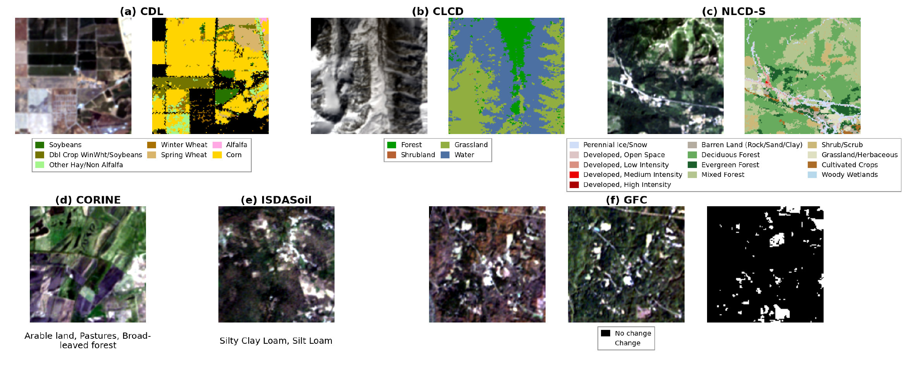

Abstract
Key Contributions
-
1
ChronoEarth-492K dataset — the first large-scale hyperspectral SSL dataset offering 17 years of temporally calibrated global observations from NASA EO-1 Hyperion (2001–2017), with 492,354 patches at 30 m resolution across 9 global regions.
-
2
ChronoEarth-Benchmark — a unified evaluation suite with static, short-horizon, and long-horizon temporal tasks across six geospatial products, with leak-proof spatial splits designed for realistic OOD evaluation.
-
3
Extensive baselines — comprehensive empirical evaluation of state-of-the-art hyperspectral foundation models (SpectralViT, LESSViT, DOFA, HyperSigma, SatMAE, DINOv3) under static, temporal, and cross-satellite transfer settings.
Data Collection & Processing Pipeline
ChronoEarth-492K is built from the complete NASA EO-1 Hyperion Level-1T archive (May 2001 – March 2017), the longest-running spaceborne hyperspectral mission to date. The pipeline consists of four stages:

Figure: Global Patching and Spatial Alignment. (a) Raw EO-1 Hyperion observation. (b) Global patching using a UTM-zone–specific grid, with each patch assigned a unique spatial UID. (c) Spatial alignment of patches sharing the same UID across multiple observations. (d) Formation of spatiotemporal sequences by aggregating aligned samples from different timestamps.
Benchmark Label Processing
To construct the ChronoEarth-Benchmark, we align six geospatial label products with the hyperspectral imagery using the UID-based spatial index. Each label layer is projected to the corresponding UTM grid, and all valid location–label pairs are retained as supervision targets — enabling multi-year temporal task construction. Two quality filters are applied:
- Class filtering: Labels with frequency below 1% are grouped into a background class to reduce noise from rare categories.
- Entropy filtering: Patches with normalized Shannon entropy below τ = 0.1 are discarded, retaining only semantically informative samples.
Leak-proof train/val/test splits are generated by a distance-aware grouping strategy based on EO-1 orbital swaths. Patches from the same acquisition are grouped into spatial units, and overlapping units are merged into connected components. Splits are assigned at the component level, inducing a spatial OOD setting where test samples come from geographically distinct regions.
Dataset Statistics
Global Coverage

Figure: Global spatial coverage of ChronoEarth-492K. Red markers indicate hyperspectral observation locations distributed across Africa (AF), Arctic (AC), East Asia (EA), Europe (EU), Latin America (LA), North America (NA), Oceania (OC), Southeast Asia (SEA), and Southwest Asia (SWA).
Temporal Distribution

Figure: Temporal distribution of ChronoEarth-492K. (a) 69.5% of locations have a single observation; 28,786 locations have ≥3 timestamps enabling long-horizon modeling. (b) Time gaps between consecutive acquisitions are broadly distributed, from days to years. (c) Temporal coverage span per location — over one-third of multi-temporal sites span more than 2 years.
Spectral Groups
| Group | Band IDs | Wavelength Range | # Channels |
|---|---|---|---|
| VNIR | B010 – B057 | 447 – 925 nm | 48 |
| SWIR1 | B081 – B097 | 952 – 1114 nm | 17 |
| SWIR2 | B101 – B119 | 1154 – 1336 nm | 19 |
| SWIR3 | B134 – B164 | 1487 – 1790 nm | 31 |
| SWIR4 | B182 – B221 | 1971 – 2365 nm | 40 |
| All | 447 – 2365 nm | 155 |
Comparison with Existing Hyperspectral SSL Datasets
| Dataset | # Images | Patch Size | Sensor | Bands | GSD | Temporal Coverage |
|---|---|---|---|---|---|---|
| HySpecNet-11k | ~11k | 128×128 | EnMAP | 202 | 30 m | ✗ |
| MSST | ~20k | 64×64 | EnMAP | 200 | 30 m | ✗ |
| HSIHybrid | ~4M | 9×9 | Multiple | Var. | — | ✗ |
| HyperGlobal-450K | ~447k | 64×64 | EO-1 & GF-5B | 242/330 | 30 m | ✗ |
| SpectralEarth | ~538k | 128×128 | EnMAP | 202 | 30 m | 2 Years |
| ChronoEarth-492K ours | ~492k | 128×128 | EO-1 | 155 | 30 m | 17 Years |
ChronoEarth-Benchmark
ChronoEarth-Benchmark integrates six open-source geospatial annotation products, covering land cover, crop type, forest dynamics, and soil properties across multiple continents. Three task types are defined:
Single hyperspectral observation paired with the same-year label. Segmentation and multi-label classification.
Multiple temporally adjacent observations for the same label (T ≤ 4). Models aggregate short-term context under full supervision.
Future prediction: observations from 2001 to year n predict labels at year n+1. Tests temporal forecasting under partial supervision.
| Dataset | Region | Classes | Task Type | Static samples | SH samples | LH samples |
|---|---|---|---|---|---|---|
| GFC | Global | 1 | Forest Change Detection | 5,509 | — | — |
| ISDASoil | Africa | 8 | Soil Classification | 17,808 | 1,549 | — |
| CDL | USA | 12 | Crop Type Segmentation | 10,162 | 1,762 | 538 |
| CORINE | Europe | 19 | Land Cover Classification | 19,774 | — | — |
| NLCD-S | USA | 16 | Land Cover Segmentation | 55,476 | 4,077 | 1,812 |
| CLCD | China | 7 | Land Cover Segmentation | 17,614 | 1,069 | 460 |
Benchmark Dataset Illustrations

Figure: Example patches from the six benchmark datasets. (a) CDL crop type with soybean, wheat, and corn labels. (b) CLCD Chinese land cover including forest, grassland, and shrubland. (c) NLCD-S US land cover across 16 classes. (d) CORINE European land cover. (e) ISDASoil Africa soil texture classification. (f) GFC forest change detection (black = no change, white = change).
Generalization Settings
Spatial-Temporal Generalization (CORINE). Data is split into temporal ID (2001–2012) and temporal OOD (2013–2017), then further divided by distance-aware spatial grouping. This yields four evaluation conditions: in-distribution (ID), temporal OOD (T-OOD), spatial OOD (S-OOD), and joint spatial-temporal OOD (ST-OOD).
Continental Generalization (GFC). Models are trained on data-rich regions (Europe, North America, East Asia) and evaluated on underrepresented continents (Africa, Latin America, Oceania, Southwest Asia), simulating real-world annotation imbalance.
Benchmark Results
We evaluate six hyperspectral foundation models: SpectralViT, LESSViT, DOFA, HyperSigma, SatMAE, and DINOv3 (adapted), all at ViT-Base scale. Sup. denotes supervised training from random initialization without self-supervised pretraining. Bold = best per column; italic red ↓ = performance degrades when more frames are added.
Static Task Results
Self-supervised pretraining on ChronoEarth consistently improves over supervised counterparts. LESSViT achieves the best overall performance, demonstrating the benefit of architectures that explicitly model spatial–spectral interactions.
| Method | CLCD mIoU ↑ |
CDL mIoU ↑ |
NLCD-S mIoU ↑ |
ISDASoil mAP ↑ |
|---|---|---|---|---|
| DOFA | 47.77 | 12.60 | 24.08 | 51.20 |
| HyperSigma | 41.53 | 11.45 | 23.05 | 54.50 |
| DINOv3 | 47.10 | 11.65 | 24.46 | 50.90 |
| SatMAE | 41.25 | 11.94 | 22.23 | 49.80 |
| ChronoEarth Pretrained | ||||
| Sup. SpectralViT | 48.01 | 15.50 | 29.10 | 57.79 |
| SpectralViT | 53.29 | 20.87 | 30.80 | 57.70 |
| Sup. LESSViT | 37.66 | 3.49 | 19.05 | 50.15 |
| LESSViT | 54.84 | 23.91 | 33.59 | 56.02 |
CORINE: Spatial-Temporal Generalization (mAP ↑)
Performance degrades progressively from ID → T-OOD → S-OOD → ST-OOD, with spatial shift introducing the largest drop. SpectralViT and LESSViT pretrained on ChronoEarth achieve the highest scores across all OOD settings.
| Method | ID | T-OOD | S-OOD | ST-OOD |
|---|---|---|---|---|
| DOFA | 70.08 | 62.77 | 57.85 | 51.80 |
| HyperSigma | 59.99 | 58.09 | 54.75 | 49.18 |
| DINOv3 | 58.93 | 54.88 | 50.80 | 46.00 |
| SatMAE | 67.26 | 58.69 | 55.77 | 47.20 |
| ChronoEarth Pretrained | ||||
| Sup. SpectralViT | 74.14 | 63.30 | 60.48 | 55.21 |
| SpectralViT | 83.98 | 68.52 | 64.15 | 56.19 |
| Sup. LESSViT | 55.47 | 51.34 | 49.01 | 47.20 |
| LESSViT | 84.07 | 68.22 | 62.52 | 58.56 |
GFC: Cross-Continental Generalization
All methods degrade from ID to OOD, reflecting the difficulty of cross-continental transfer under annotation imbalance. SpectralViT outperforms LESSViT in this sparse-supervision setting, where strong spatial aggregation matters more than fine-grained spectral modeling.
| Method | ID | OOD (Cross-Continental) | ||
|---|---|---|---|---|
| mIoU ↑ | F1 ↑ | mIoU ↑ | F1 ↑ | |
| DOFA | 16.99 | 29.05 | 12.77 | 22.65 |
| DINOv3 | 15.91 | 27.45 | 11.51 | 20.64 |
| SatMAE | 9.56 | 17.45 | 2.96 | 5.74 |
| ChronoEarth Pretrained | ||||
| Sup. SpectralViT | 23.26 | 37.74 | 16.04 | 27.65 |
| SpectralViT | 29.90 | 46.04 | 19.38 | 32.47 |
| Sup. LESSViT | 0.00 | 0.00 | 0.00 | 0.00 |
| LESSViT | 19.29 | 32.34 | 16.13 | 27.78 |
Cross-Satellite Generalization (SpectralViT backbone)
Models pretrained on ChronoEarth (EO-1 Hyperion) are fine-tuned and evaluated on EnMAP-based downstream tasks from SpectralEarth. Despite originating from a different and decommissioned sensor, ChronoEarth representations match or exceed those trained on in-domain EnMAP data.
| Pretraining Data | BDFORET mIoU ↑ |
BNETD mIoU ↑ |
EuroCrops mIoU ↑ |
CORINE mAP ↑ |
CDL mIoU ↑ |
|---|---|---|---|---|---|
| SpectralEarth (EnMAP) | 76.30 | 49.46 | 69.34 | 75.33 | 77.44 |
| ChronoEarth (ours) | 76.39 | 44.34 | 69.82 | 79.02 | 73.66 |
Short-Horizon Tasks (mIoU / mAP ↑)
Comparing T=1 (static) vs. T≤4 (multi-frame). Adding temporal context generally improves performance. The temporally pretrained SpectralViT consistently outperforms max-pooling and supervised attention aggregation, demonstrating the value of temporal SSL.
| Method | CLCD (mIoU ↑) | CDL (mIoU ↑) | NLCD-S (mIoU ↑) | ISDASoil (mAP ↑) | ||||
|---|---|---|---|---|---|---|---|---|
| T=1 | T≤4 | T=1 | T≤4 | T=1 | T≤4 | T=1 | T≤4 | |
| DOFA max | 39.88 | 39.76 ↓ | 12.68 | 14.88 | 14.96 | 18.25 | 52.80 | 50.63 ↓ |
| DINOv3 max | 40.39 | 39.27 ↓ | 10.80 | 13.51 | 11.07 | 16.98 | 47.32 | 48.89 |
| SatMAE max | 34.88 | 37.78 | 12.34 | 12.41 | 15.14 | 16.83 | 49.53 | 50.99 |
| LESSViT max | 51.19 | 54.69 | 24.80 | 26.15 | 30.58 | 31.02 | 57.33 | 58.04 |
| SpectralViT variants (ChronoEarth pretrained) | ||||||||
| SpectralViT max | 43.37 | 44.55 | 16.47 | 20.07 | 19.90 | 19.82 ↓ | 56.49 | 56.72 |
| SpectralViT attention | — | 43.77 | — | 18.97 | — | 22.88 | — | 48.98 |
| SpectralViT temporal SSL | — | 45.57 | — | 22.64 | — | 23.59 | — | 54.14 |
Long-Horizon Tasks (mIoU ↑)
Evaluating future state prediction under increasing temporal history (T≤2, T≤4, T≤8). Longer history generally helps for CLCD and NLCD-S (gradual land-cover change), while CDL (crop type) shows less stable gains — longer history may introduce outdated or noisy signals for time-sensitive targets. Temporal SSL pretraining provides consistent gains.
| Method | CLCD (mIoU ↑) | NLCD-S (mIoU ↑) | CDL (mIoU ↑) | ||||||
|---|---|---|---|---|---|---|---|---|---|
| T≤2 | T≤4 | T≤8 | T≤2 | T≤4 | T≤8 | T≤2 | T≤4 | T≤8 | |
| DOFA max | 25.51 | 35.34 | 38.97 | 18.76 | 19.51 | 22.64 | 6.02 | 10.27 | 10.44 |
| DINOv3 max | 20.26 | 33.72 | 37.04 | 18.14 | 20.34 | 21.83 | 5.25 | 9.35 | 11.22 |
| SatMAE max | 20.00 | 31.25 | 29.85 ↓ | 13.66 | 18.22 | 19.40 | 5.43 | 10.19 | 11.80 |
| LESSViT max | 38.80 | 50.08 | 54.64 | 28.36 | 33.75 | 35.52 | 9.97 | 18.83 | 14.43 ↓ |
| SpectralViT variants (ChronoEarth pretrained) | |||||||||
| SpectralViT max | 35.88 | 40.70 | 49.25 | 25.67 | 28.44 | 30.11 | 11.95 | 13.60 | 11.37 ↓ |
| SpectralViT attention | 24.28 | 32.63 | 37.75 | 25.31 | 26.97 | 27.37 | 7.43 | 7.12 ↓ | 4.53 ↓ |
| SpectralViT temporal SSL | 43.61 | 51.26 | 55.61 | 37.34 | 39.69 | 40.76 | 5.92 | 10.35 | 9.55 ↓ |
Citation
If you find ChronoEarth-492K useful in your research, please cite our paper: